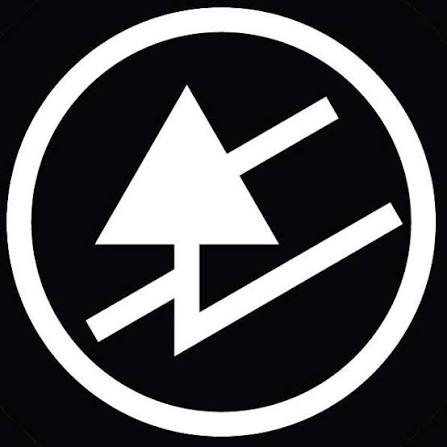

Nossa História
Ruído Real em Tempos Algorítmicos
A Guided by Noises nasceu da obsessão pelas imperfeições magnéticas, pelos chiados de agulha e pela arte que sobrevive fora das playlists automáticas. Inspirados pelo espírito cru e independente de álbuns clássicos como Bee Thousand, nossa missão é conectar colecionadores e novos ouvintes ao ritual físico da música.
Não somos apenas uma loja de discos de vinil; somos um ponto de resistência analógica. Cada LP em nossas prateleiras passa por um garimpo humanizado, priorizando o rock alternativo, o pós-punk, o slacker rock e raridades do underground mundial.
Curadoria Humana
Envio Seguro
Edições Raras
